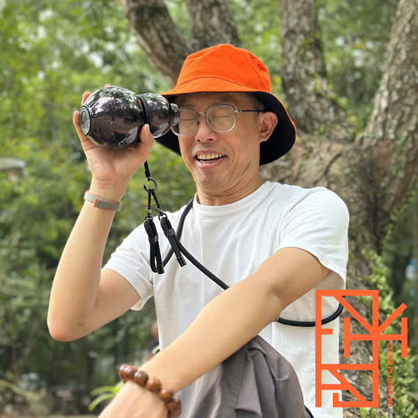

用影像記錄土地信仰，捕捉台灣文化與人文脈動。
🎥 台灣宗教民俗文化記錄頻道
偶爾也會分享旅遊景點、環島健行、在地美食與生活日常。
👉 歡迎訂閱下面各平台，帶你一起認識台灣!
Capturing the heart of Taiwan’s traditions through my lens.
Hey, I’m Pinyuan! Join me as I explore the hidden gems of Taiwan.
🎥 Documenting Taiwan’s Religious & Folk Culture
You’ll also find me sharing my travel adventures, hiking trips, local eats, and everyday life.
👉 Subscribe and follow my journey to discover the real Taiwan!